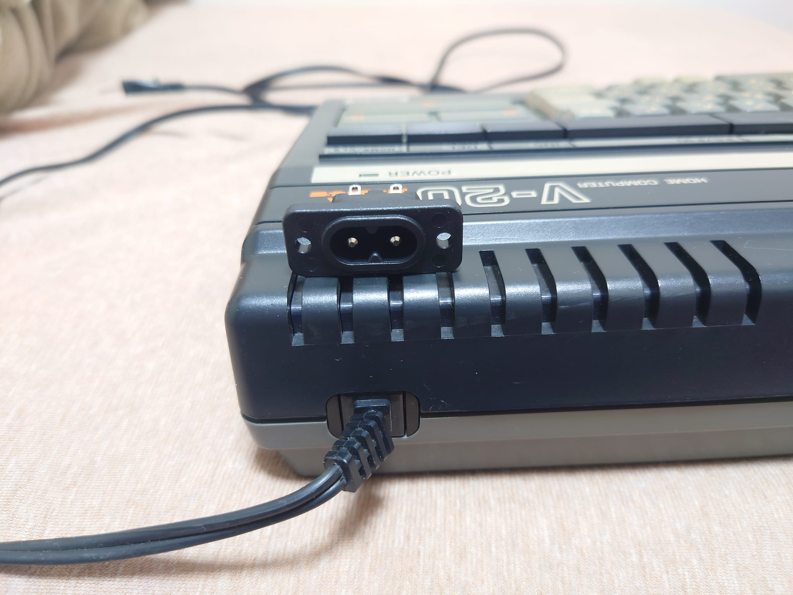

CANON V-20 メンテナンス 【電源ケーブルのメンテナンス】
まず、状態を確認。
このように、ケーブルプロテクターの根元の部分が裂けてしまっており、被服部分まで破れて中の銅線が見えています。
もうこのケーブルプロテクターは、プロテクターとしての役目を果たしておりません。
新しいケーブルと、新しいケーブルプロテクターに交換しようと思いましたが、ピッタリはまるものでないと、やっぱり気分が悪い。
しかし、ケーブルプロテクターが取り付けられている部分、直接本体外装に固定されているわけでは無く、スペーサーが取り付けられています。
このスペーサー、なんだかメガネコネクタの形に見えたので、同じサイズのメガネコネクタがないか探してみると・・・

なんと、見つかりました。（実際は若干メガネコネクタの方が小さいのですが、外装に手を加えなくても充分固定できる形状でした。）
実際にはめてみると、ジャストフィットです。
本体側のスペーサー固定用の溝にもピッタリです。ケーブルの方はケーブルプロテクタの裂けてる部分より本体側でカットしてメガネコネクタを半田付け。
メガネコネクタに接続するケーブルは、一般に売られているので、新品で十分な長さのものを新調して「安心して使えるV-20」になりました。
ケーブルが本体から直接生えていると、配置換えなどの時に結構邪魔になるのですが、メガネケーブルになって取り外せるようになったことで取り回しも良くなりました。
これで、末永く安心して使える状態にはなったかなと思います。
使ったコネクタはこちらです。
外部サイト メガネコネクタ
[前へ][次へ]